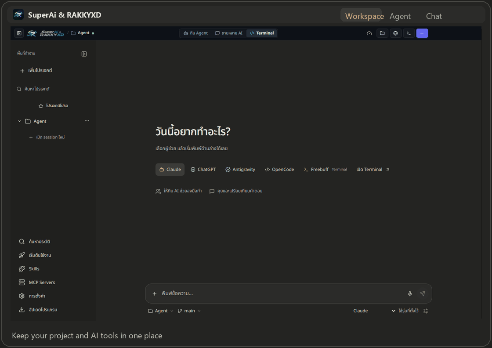

Agent
A main agent plans the task, asks when a requirement is unclear, and can delegate to one to six sub-agents. File edits are an explicit choice.
Bring Claude Code, Codex, Antigravity, OpenCode, Freebuff and Ollama into one desktop workspace. Keep projects, terminals and AI sessions close while choosing how each task gets done.
Open source · MITNo AI relay serverWindows · macOS

0
MITOpen source
Local-firstNo AI relay server
4 languagesEnglish · Thai · Japanese · Chinese
Windows + macOS64-bit desktop builds
Start with one project, then use the workflow that fits the task. The app keeps sessions organized without hiding what each provider is doing.
A main agent plans the task, asks when a requirement is unclear, and can delegate to one to six sub-agents. File edits are an explicit choice.
Open multiple terminal or AI CLI sessions for the same project. Choose the provider, model and effort for each session.
Send one prompt to several AI models, compare attributed answers side by side, and ask for a synthesis when you want one.


Move between sessions, project files and previews in the same workspace.

SuperAi & RAKKYXD connects to provider CLIs using the accounts you choose. Prompts are handled by that provider. Local Ollama models can run on your device.
Read the privacy detailsRelease links always point to the latest published version. Portable ZIPs and SHA-256 files are available on the releases page.
| Platform | Installer | Format |
|---|---|---|
| Windows 10 / 11 (64-bit) | SuperAi-RAKKYXD-Setup.exe | Windows installer |
| macOS 11+ · Apple Silicon | SuperAi-RAKKYXD-macos-arm64.dmg | DMG |
| macOS 11+ · Intel | SuperAi-RAKKYXD-macos-x64.dmg | DMG |
Before opening: Windows builds are not code-signed. macOS builds use ad-hoc signing and are not notarized, so your system may show a security prompt. Verify the SHA-256 checksum from the same release before installing.
View the latest release and checksumsThe setup guide checks for the required runtime and helps install supported command-line tools.
No. SuperAi & RAKKYXD is an independent open-source project. Product names and trademarks belong to their respective owners.
The app does not run an AI relay. Prompts go to the provider or CLI you choose. The optional usage counter does not receive prompts or files; it records an install ID, app version, operating system and Cloudflare country code. See the privacy policy.
Not always. You can sign in through a supported CLI with an existing provider account. API keys are optional for supported providers.
Windows 10/11 64-bit and macOS 11 or later on Apple Silicon or Intel. Linux is not officially supported.
Windows builds are not code-signed. macOS builds use ad-hoc signing and are not notarized. Check the SHA-256 value on the release page before opening a file.